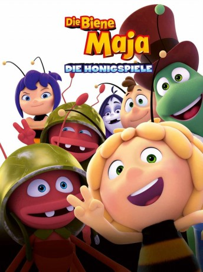

 
 IMDB-Wertung: 5.6 / 10
IMDB-Wertung: 5.6 / 10  Metascore:
Metascore: 
Ein Gesandter der Kaiserin hat den weiten Weg von Summtropolis auf sich genommen, um den Bienen der Klatschmohnwiese eine Nachricht zu überbringen. Ob diesmal ihr Traum in Erfüllung geht und sie endlich an den Honigspielen teilnehmen dürfen? Doch Majas Aufregung wandelt sich schnell zu bitterer Enttäuschung, als sie erfährt, dass der Bote nur gekommen ist, um die Hälfte ihrer Honigernte für die Spiele einzufordern. Und dabei brauchen sie den Honig doch so dringend für den Winter! Empört beschließt Maja kurzerhand, die Sache selbst zu regeln und überredet ihren Freund Willi zu einer abenteuerlichen Reise nach Summtropolis, um sich direkt bei der Kaiserin für ihren Bienenstock einzusetzen. Allerdings geht das gehörig schief, denn die Kaiserin ist verärgert über Majas Ungehorsam und beschließt, der kleinen Biene eine Lektion zu erteilen. Sie darf an den Spielen teilnehmen, sollte sie jedoch verlieren, muss ihr Bienenstock die gesamte Honigernte abgeben.
Jahr: 2018
Dauer: 85 Minuten
FSK: 0
Land: Deutschland Studio: UFATonspuren:
Untertitel:
Auflösung: 1080p (1920x1040) Größe: 3911 MB
Genre: Komödie, Abenteuer, Animation/Trick, Familie
Regisseur: Noel Cleary, Sergio Delfino, Alexs Stadermann
Drehbuch: Noel Cleary, Fin Edquist, Kevin Peaty, Alexs Stadermann
Soundtrack: Ute Engelhardt, Ute Engelhardt
Darsteller:
 Richard Roxburgh als Flip
Richard Roxburgh als Flip Rupert Degas als Beegood
Rupert Degas als BeegoodDatei: X:\Kinder Collections\Biene Maja\Biene Maja - Die Honigspiele, Die (2018, FSK0, 1920x1040) 3D.mkv seit 13.09.2018
Festplatte: Kinder-Filme+Trick
 Es gibt insgesamt 8 Filme in der Gruppe 'Kinder Collections\Biene Maja'
Es gibt insgesamt 8 Filme in der Gruppe 'Kinder Collections\Biene Maja'